In this tutorial, we will learn the basics of coding and design a simple programming interface for coding a game. We will use Teachable Machine and Kart-ON Game Web App to code the Flappy Bird game in a new way. We will develop an AI model (a computer vision system) to code the required components of the game!
We already prepared some required assets of the game, so that you can focus on the fun parts. Below, you can see the ten main commands that you will use to create the game from scratch. Green blocks show the events and blue blocks represent actions.
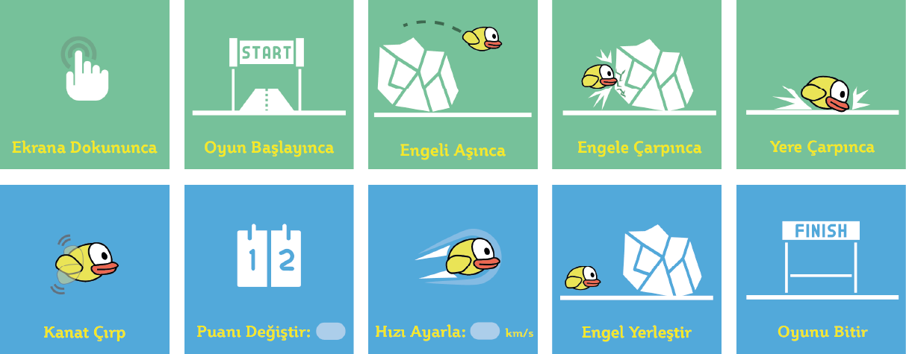
First, let's start with representing these commands using our craft materials. For example, I created some drawings like the following figure, but you can be more creative and create some 3D action figures.
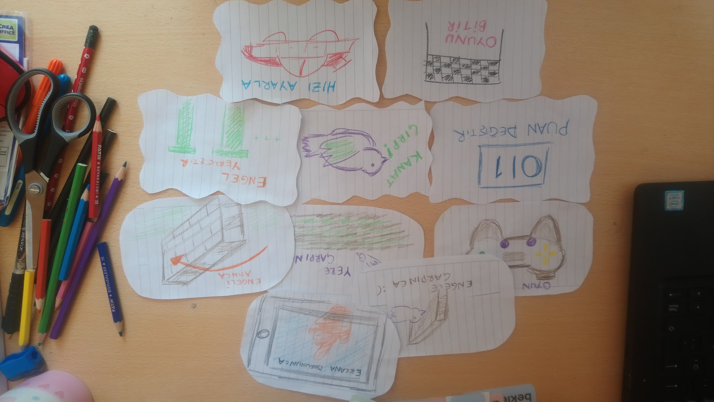
Now, create your own tangible representations of these programming blocks with play dough, LEGO, paper, pencil, or other craft materials.
Teachable Machine is a web application that allows us to quickly use object, speech, and pose recognition models, which are common uses of artificial intelligence. In our daily*lie applications, these technologies become standard tools.
You will use Teachable Machine to introduce your own tangible programming commands.
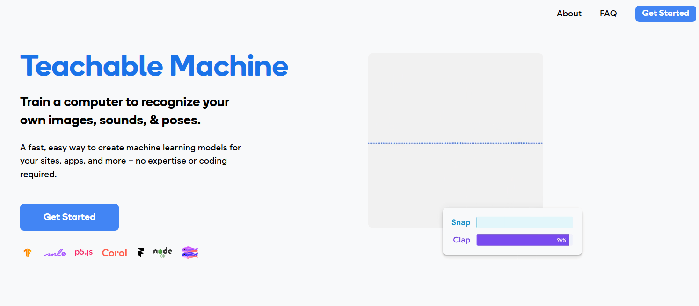
After pressing the
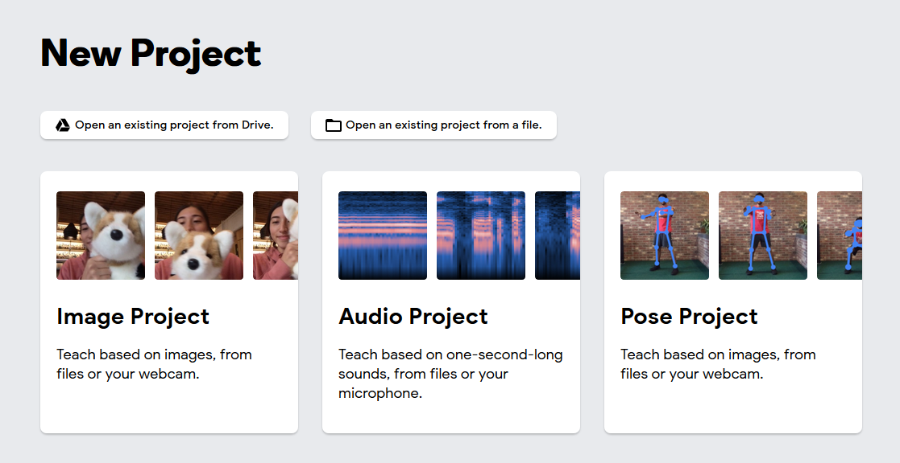
We want the computer to recognize the tangible programming commands you already prepared using a webcam. So, we should select the Image Project.
When you start a new project, the application interface shows a basic flow of an AI training system. Artificial intelligence applications are currently in widespread use. They collect a lot of data to learn the features that are required to understand the problem.
For example, we want to train a system that can distinguish between apples and oranges. To create this system, we must first find many pictures of apples and pears. Thus, by feeding them into the system, we can enable the system to pass to the second stage.
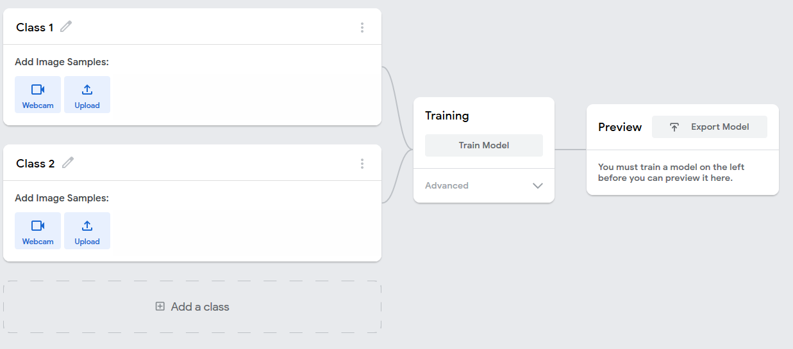
Before we move on to the second step, we open our Webcam to collect image data. First, we introduce the "When Touching Screen" command.
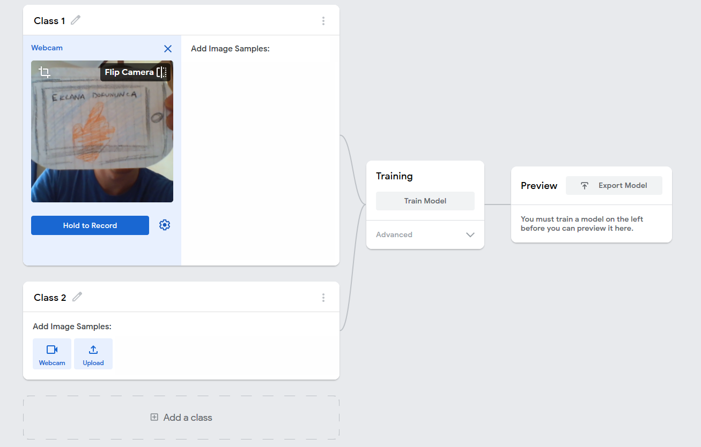
If you have chosen which object you will use for this command, you can start recording many different versions of this image from close, distant, and slightly different angles while pressing the Hold To Record button. I want to train my AI module using about 40 photos. For this, you can press and hold the photo from 40 different views until you take it. Or, as you can see in the photo below, we can change the settings for taking photos and automate the shooting process by first pressing the "gear" shaped icon.
FPS specifies how many photos will be taken per second, Delay specifies how many seconds the capturing process will start automatically, and Duration specifies how many seconds it will continue capturing. With the settings given on the screen below, we can set up a system that can take approximately 40 photos based on the processing capacity of your computer.
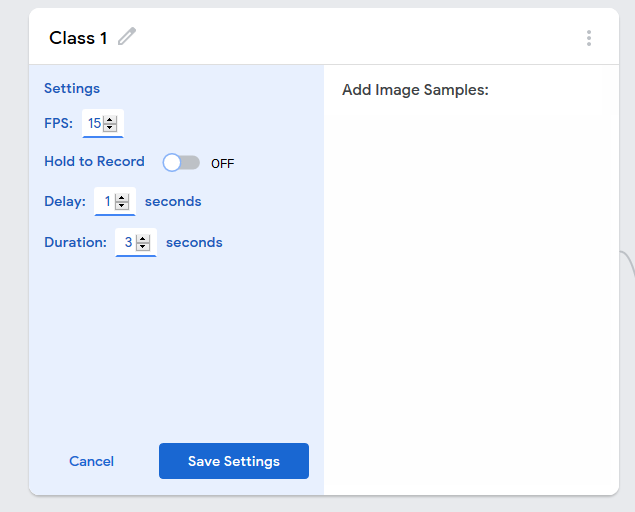
After pressing "Save Settings" and saving our settings, let's record our images using these settings.
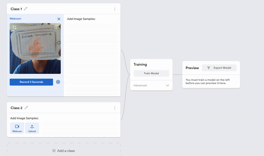
So, how can our interface detect the programming commands that you introduced to Teachable Machine? We need to develop a standard mapping for this. The system that came to our mind was assigning numbers to each command as the following table shows:
|
Programming Command |
Class Number |
|
When User Touches the Screen |
1 |
|
When the Game Starts |
2 |
|
When Passes the Obstacle |
3 |
|
When Hits an Obstacle |
4 |
|
When the Game Ends |
5 |
|
Flap |
6 |
|
Change Score |
7 |
|
Adjust Speed |
8 |
|
Place Obstacles |
9 |
|
Finish the Game |
10 |
We have assigned a number to each programming command that you see in the table. You need to assign these IDs to training sets so that our programming interface can understand which command your designed cards correspond to in its system.
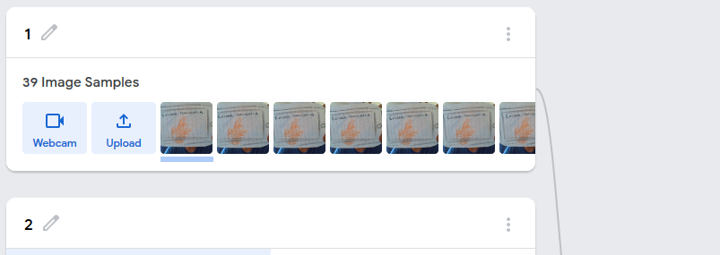
As in the figure above, I change the name of my class "When I Touch the Screen" to the corresponding "1" in the table.
After collecting images for three programming command labels, it's a good practice to test our model training results before proceeding further. Let's press the training button to start the model training.
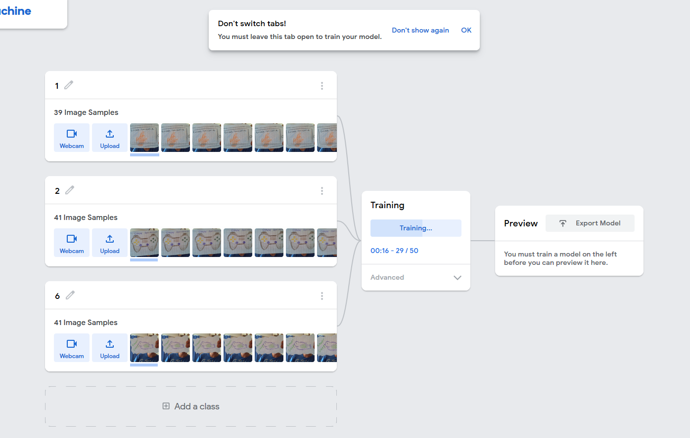
We can test the recognition accuracy of our model in the "Preview" box which opens after the training process is completed. Let's show each programming object to the camera and evaluate the recognition accuracy in the "Output" field. We can say that the system is recognizing the cards well if the accuracy bars show values higher than 90% most of the time. If our system does not give reliable results, continue collecting more samples from different angles in better lighting conditions.
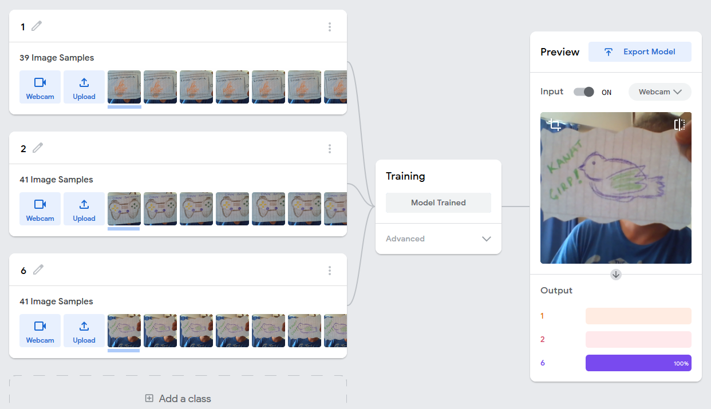
In our test samples, the model could recognize the programming objects with almost ~90% accuracy . But when it saw a different object, as in the example below, the model was confused. As you will notice, the vision model tries to make its own choices in this three-class world that we have established, since it has no access to information other than the information we provide. But it can't tell us it's just another card.
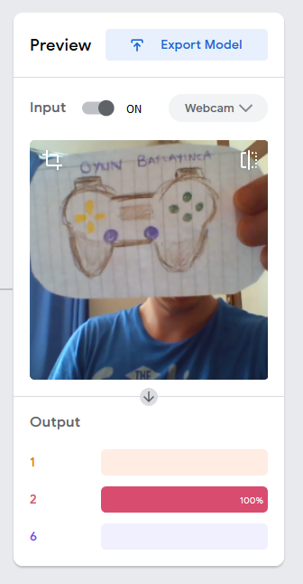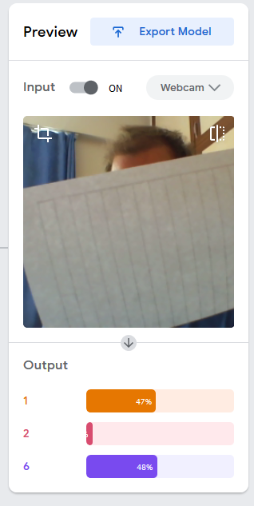
How will we use this trained model in our game?
By clicking the "Export Model" button on the top of the preview card, we can get our sharable link. Let's create the link for our model by clicking the "Upload my model" button in the window that opens as follows.
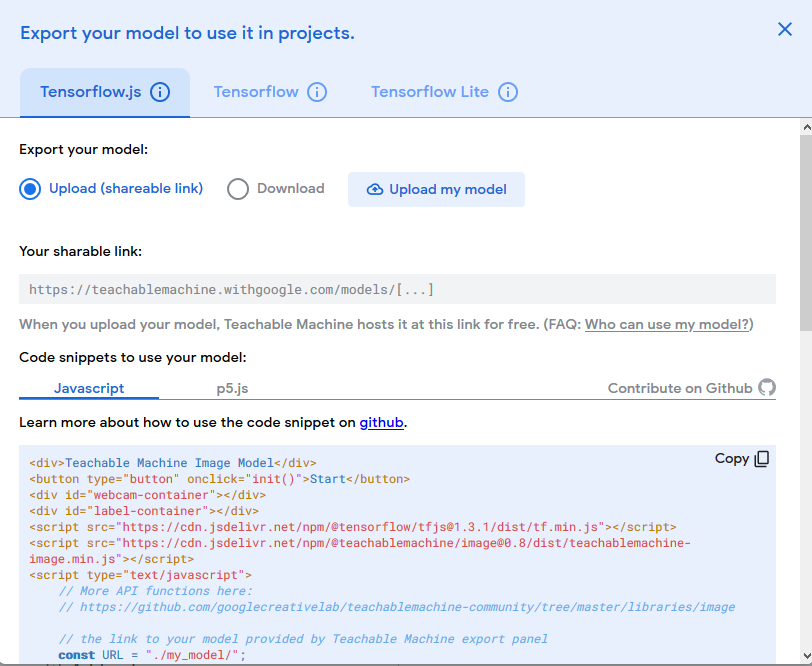
When the link creation process is completed, you can copy the link that appears under "Your Shareable Link".
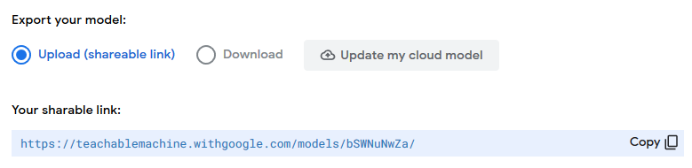
Use this link via,
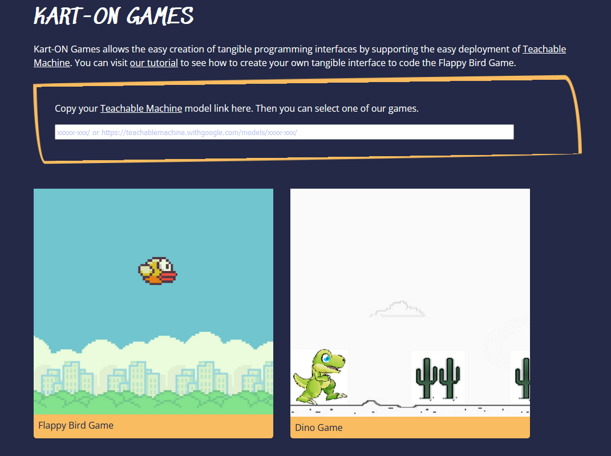
If you want to save the Teachable Machine project and develop your model further, you can save your model to Google Drive by clicking the three-line menu icon next to the "Teachable Machine" heading and selecting the "Save Project to Drive" option.
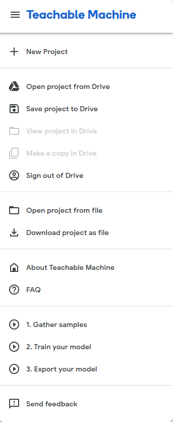
After saving the project, you can open the project again at any time by connecting with your Google account.